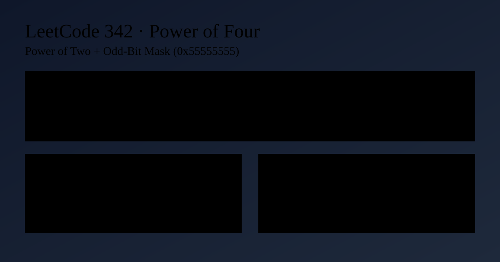

LeetCode 342: Power of Four (Bitmask + Power-of-Two Characterization)
LeetCode 342Bit ManipulationMathToday we solve LeetCode 342 - Power of Four.
Source: https://leetcode.com/problems/power-of-four/

English
Problem Summary
Given an integer n, return true if it is a power of four. A power of four is one of: 1, 4, 16, 64, ...
Key Insight
A number is a power of four iff all conditions hold:
1) n > 0
2) n is a power of two: (n & (n - 1)) == 0
3) its single set bit is at an odd index (0-based): (n & 0x55555555) != 0
The mask 0x55555555 keeps bits at positions 0,2,4,... so it filters exactly powers of four among powers of two.
Algorithm Steps
1) If n <= 0, return false.
2) Check (n & (n - 1)) == 0.
3) Check (n & 0x55555555) != 0.
4) Return true only when both bit checks pass.
Complexity Analysis
Time: O(1).
Space: O(1).
Common Pitfalls
- Checking only "power of two" and forgetting to exclude 2, 8, 32, ...
- Forgetting the n > 0 guard.
- Using floating-point logarithms, which may introduce precision issues.
Reference Implementations (Java / Go / C++ / Python / JavaScript)
class Solution {
public boolean isPowerOfFour(int n) {
return n > 0 && (n & (n - 1)) == 0 && (n & 0x55555555) != 0;
}
}func isPowerOfFour(n int) bool {
return n > 0 && (n&(n-1)) == 0 && (n&0x55555555) != 0
}class Solution {
public:
bool isPowerOfFour(int n) {
return n > 0 && (n & (n - 1)) == 0 && (n & 0x55555555) != 0;
}
};class Solution:
def isPowerOfFour(self, n: int) -> bool:
return n > 0 and (n & (n - 1)) == 0 and (n & 0x55555555) != 0/**
* @param {number} n
* @return {boolean}
*/
var isPowerOfFour = function(n) {
return n > 0 && (n & (n - 1)) === 0 && (n & 0x55555555) !== 0;
};中文
题目概述
给你一个整数 n，判断它是否是 4 的幂。4 的幂序列为：1、4、16、64、...
核心思路
满足 4 的幂需要同时满足三件事：
1）n > 0
2）n 是 2 的幂：(n & (n - 1)) == 0
3）唯一的 1 位出现在偶数位（从 0 开始计数）：(n & 0x55555555) != 0
0x55555555 这个掩码保留 bit0、bit2、bit4...，正好把 2 的幂里不是 4 的幂的数字过滤掉。
算法步骤
1）若 n <= 0，直接返回 false。
2）判断是否满足 (n & (n - 1)) == 0。
3）判断是否满足 (n & 0x55555555) != 0。
4）两个位运算条件都通过才返回 true。
复杂度分析
时间复杂度：O(1)。
空间复杂度：O(1)。
常见陷阱
- 只判断是否为 2 的幂，漏掉 2、8、32 等情况。
- 忘记先判断 n > 0。
- 用对数法判断，可能遇到浮点精度误差。
多语言参考实现（Java / Go / C++ / Python / JavaScript）
class Solution {
public boolean isPowerOfFour(int n) {
return n > 0 && (n & (n - 1)) == 0 && (n & 0x55555555) != 0;
}
}func isPowerOfFour(n int) bool {
return n > 0 && (n&(n-1)) == 0 && (n&0x55555555) != 0
}class Solution {
public:
bool isPowerOfFour(int n) {
return n > 0 && (n & (n - 1)) == 0 && (n & 0x55555555) != 0;
}
};class Solution:
def isPowerOfFour(self, n: int) -> bool:
return n > 0 and (n & (n - 1)) == 0 and (n & 0x55555555) != 0/**
* @param {number} n
* @return {boolean}
*/
var isPowerOfFour = function(n) {
return n > 0 && (n & (n - 1)) === 0 && (n & 0x55555555) !== 0;
};
Comments